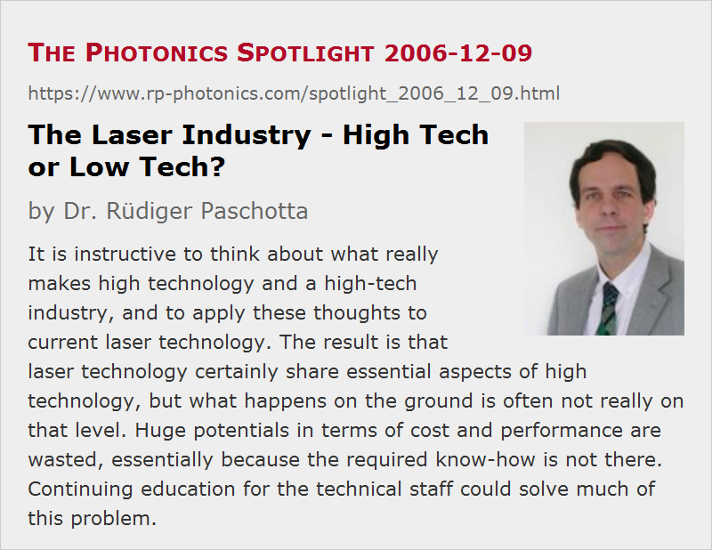

The Laser Industry - High Tech or Low Tech?
Posted on 2006-12-09 as a part of the Photonics Spotlight (available as e-mail newsletter!)
Permanent link: https://www.rp-photonics.com/spotlight_2006_12_09.html
Author: Dr. Rüdiger Paschotta, RP Photonics Consulting GmbH
Abstract: It is instructive to think about what really makes high technology and a high-tech industry, and to apply these thoughts to current laser technology. The result is that laser technology certainly share essential aspects of high technology, but what happens on the ground is often not really on that level. Huge potentials in terms of cost and performance are wasted, essentially because the required know-how is not there. Continuing education for the technical staff could solve much of this problem.

Laser technology is normally without any hesitation regarded as a prime example of high technology. But what actually makes high technology? I think this question deserves some thought, since the application of reasonable criteria and standards can stimulate improvements (also in this case, I promise!), while simply taking over the slogans from marketing departments will normally not produce much insight.
A precise definition of “high tech” seems not to exist, but we may anyway discuss what a sensible meaning could be. Certainly, such a technology should be advanced compared to the average; for example, it should operate at the forefront of scientific knowledge, implement substantially novel ideas, use advanced methods of design and fabrication and/or novel materials, and finally achieve amazing performance which wasn't possible a while ago.
Let us now ask to what extent laser technology meets such criteria, and also to what extent this applies to the existing laser industry – technology is an abstract thing, and what really happens does so in industry.
- The first demonstration of a laser (optical maser) by T. H. Maiman occurred in 1960, i.e., relatively long ago, and the essential principles of lasers have been understood for several decades by now. The forefront of scientific knowledge is nevertheless often involved in laser technology – not concerning entirely novel physical effects, but via the often still surprising interactions of actually known effects, which still allow for creative and powerful inventions. However, it is probably fair to say that only a minor percentage of people working in nowadays' laser industry have an education and experience which allows them to work at the forefront of scientific knowledge. So what is actually done is often based on what was already known many years ago. This leads to another important aspect:
- Many universities are not able to provide high-level education on laser physics and technology, and education for engineers is often based on what their teachers learned twenty years ago. Anyway, a fast evolving field should involve a lot of continuing education, but how many laser companies actually enable their employees to obtain that? Learning on the job is certainly important, but how can one expect an R & D team to do creative development work at the forefront of scientific knowledge without ever caring about continuing education, e.g. by arranging a training course for the technical staff? It can hardly be sufficient to hire another engineer or physicist, be it an experienced one or a young newcomer, every few years.
- Substantial performance improvements are obtained, e.g. concerning various types of high power lasers or ultrafast laser systems, and new materials (e.g. laser crystals) are introduced all the time. The bulk of the products, however, is quite a distance away from what is technologically possible based on the most advanced current knowledge. And of course, what matters is not only performance in terms of output power, but also stability, compactness, minimum number of parts, etc. – and this also concerns cost of manufacturing, maintenance and repair. Good results are hard to obtain without a solid understanding of both laser physics and various engineering issues.
- Advanced methods of design and fabrication exist, but are too often not used, probably again because the education required for that is not available in house. Some laser companies have experts who are able e.g. to do advanced resonator design with a powerful software, taking into account not only mode sizes, but also alignment sensitivity, reaction to thermal lensing, etc. But all too often product designs and the whole development are made by “trial and error”, often trying to develop one design from another (also not perfect one) without being aware that certain performance aspects change when some details are modified. The consequences are well known: not only unsatisfactory performance figures, but also huge time delays, correspondingly delayed financial return, lost customer confidence, and poorly utilized laboratory infrastructure. Often enough, people simply resign (“that's life”), not even knowing that advanced design methods and improved methods of development exist which could eliminate many of these problems, cutting cost and risks at the same time.
So what happens on the ground is often not what should be characteristic for a high-tech industry. Huge potentials in terms of cost and performance are wasted. What is deadly needed is in particular a better education for many more laser engineers, including a serious amount of continuing education in every high-tech company, and – may I say that? – the support of high-level technical consultants in areas like product design, problem analysis e.g. with the use of modeling, and staff training not only for the secretary (for handling the new office software) but also for the technical personnel.
This article is a posting of the Photonics Spotlight, authored by Dr. Rüdiger Paschotta. You may link to this page and cite it, because its location is permanent. See also the RP Photonics Encyclopedia.
Note that you can also receive the articles in the form of a newsletter or with an RSS feed.
Questions and Comments from Users
Here you can submit questions and comments. As far as they get accepted by the author, they will appear above this paragraph together with the author’s answer. The author will decide on acceptance based on certain criteria. Essentially, the issue must be of sufficiently broad interest.
Please do not enter personal data here; we would otherwise delete it soon. (See also our privacy declaration.) If you wish to receive personal feedback or consultancy from the author, please contact him e.g. via e-mail.
By submitting the information, you give your consent to the potential publication of your inputs on our website according to our rules. (If you later retract your consent, we will delete those inputs.) As your inputs are first reviewed by the author, they may be published with some delay.
|  |
If you like this page, please share the link with your friends and colleagues, e.g. via social media:
These sharing buttons are implemented in a privacy-friendly way!